Intro to Game Engine, Unity, and C#
What is a Game Engine?
Let's break this question down. First of all...
What is a Game?
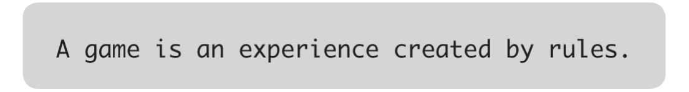
A game is an experience, and that experience has a certain character. [...] And if we’re discussing an experience, then that implies someone is there to have that experience, someone we refer to as a player. We can’t talk about a game without talking about the experience of the player playing that game, even if the playing experience we’re talking about is often our own.
The experience we call a game is created by the interaction between different rules, but the rules themselves aren’t the game, the interaction is! A game can’t exist without a player or players: someone needs to be engaging with the rules for the experience to happen.
For example, in a game of tag, what are the rules for...
- THE SETUP -- how do you decide who's "it"? when can they start tagging people?
- THE LEVEL / PLAYING FIELD -- how far can players go before they're "out-of-bounds"? are there safe zones where people can't be tagged?
- PLAYER BEHAVIOUR -- are players only allowed to travel in a certain manner (e.g. speedwalking, but no running), and how can that be enforced (e.g. speedwalking means both feet cannot be lifted off the ground at the same time at any moment.) If someone gets tagged, what happens to them? Do they freeze in position, become "it", or are they out of the game?
- CONCLUDING THE EXPERIENCE -- how do you know when the game has ended, and who the winner/loser is (if any)?
"Is xxx a game?"
Regardless of what you end up making for your assignments, you'll eventually have to make decisions about the parameters and conditions of your project (which you could think of as being "the rules of your game") and consider how one's interaction / encounter of these "rules" will affect their overall experience of it.
In this class, we will focus on how to implement these rules using game engines, so that you can explore its creative affordances for designing particular experiences.
What is an Engine?

Consider the following definitions from the Wikitionary page for "Engine":
"A complex mechanical device which converts energy into useful motion or physical effects."
In a mechanical sense, an engine is an energy converter that can transform certain type(s) of input into other type(s) of "productive" output.
"A person or group of people which influence a larger group; a driving force."
"Anything used to effect a purpose; any device or contrivance; an agent."
In an abstract sense, an engine is an information carrier that can contain, transfer, and transform ideas, beliefs, and principles.
"A large construction used in warfare, such as a battering ram, catapult etc. [from 14th c.]"
"The part of a car or other vehicle which provides the force for motion, now especially one powered by internal combustion. [from 19th c.]"
From a historical and infrastructural standpoint, an engine is a catalyst of both the production and destruction of worlds, societies, and cultures.
"A software or hardware system responsible for a specific technical task (usually with qualifying word)."
a graphics engine; a physics engine.
In computing, an engine is a specialised machine for performing a specific task.
In this class, we will be mostly using software programs designed specifically for game development... but really, anything can be a "game engine."
It is also worth considering the various contexts in which the engine emerges, so that we can better grasp the possibilities and implications of this technology, and then decide how and where we would like to proceed with this tool.
Put them together... GAME ENGINE!
Returning to our first question:
What is a game engine?
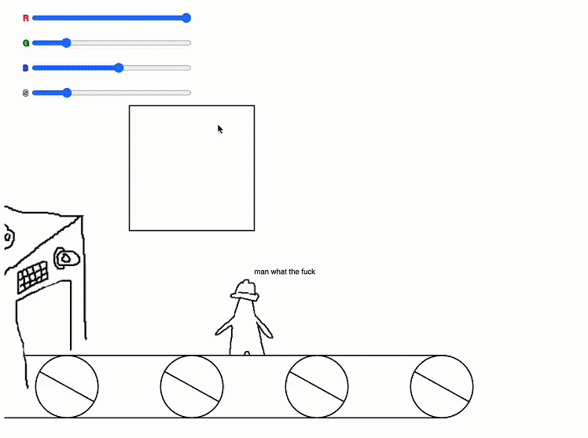
- Tools designed specifically for developing games (e.g. Unity, Bitsy, PICO-8, in-game level builders)
- Platforms which primarily serve some other non-game-making function (if any at all), but are nonetheless used for making games. (e.g. Spreadsheets, Checkboxes, Post-war junkyards and bombsites)
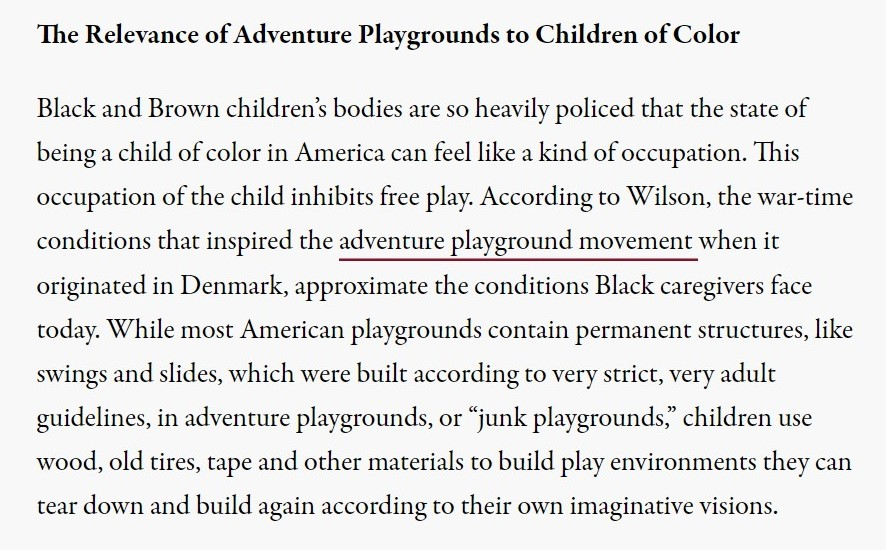
If a game is "an experience that is made from the interaction between different rules", then broadly speaking, a game engine could be anything that converts rules and interaction into playable experiences.
Unity is a Game Engine
We'll spend most of this course working in the Unity game engine.

Unity, initially released in 2005, is a closed-source game engine, and Unity Technologies, the developer of the engine, has been a publicly traded company since 2020.
The engine gained popularity through being free for small, independent developers, with a relatively easy learning curve.
Compared to most other game engines, Unity also tries to avoid being aesthetically identifiable and not be tied to a particular genre of game.
Other industries use Unity for things like Architectural and Auto rendering, Film and TV production, AI training and computer vision.
Unity also contracts with the US Department of Defense for military training and simulation.
Anatomy of the Unity Editor

Read the following articles from the Unity User Manual:
Positioning Game Objects in Unity
Read more in the Unity User Manual: https://docs.unity3d.com/Manual/PositioningGameObjects.html
Remember the shortcut QWERTY:
Hand tool
Pans scene view. Shortcut: [Q]
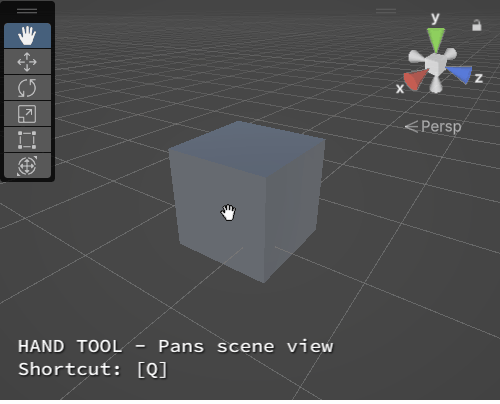
Move tool
Transforms object position. Shortcut: [W]
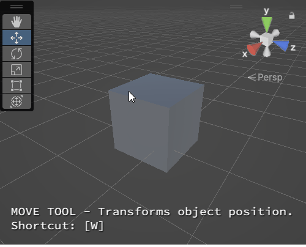
Rotate tool
Transforms object rotation. Shortcut: [E]
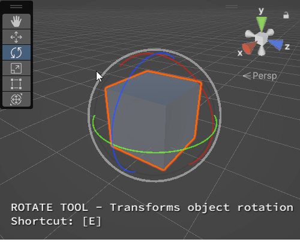
Scale tool
Transforms object scale. Shortcut: [R]
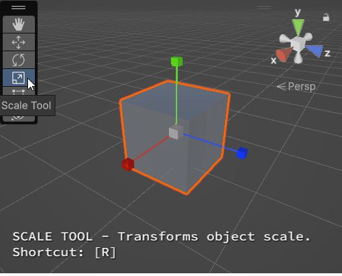
Rect Transform tool
Transform GUI objects. Shortcut: [T]
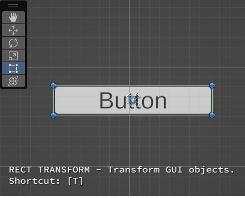
Transform tool
Moves, rotates, and scales object. Shortcut: [Y]
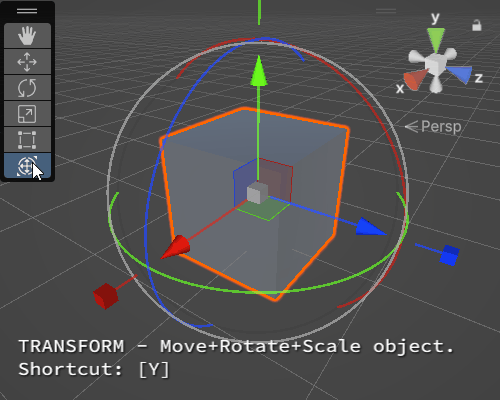
Scene Navigation in Unity
Read more in the Unity User Manual: https://docs.unity3d.com/Manual/SceneViewNavigation.html
Pan scene view (Hand Tool)
Click + Drag Mouse Scroll Wheel Button.
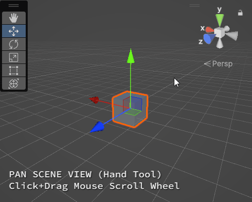
Rotate scene view around central pivot
Click + Drag Left Mouse Button while holding down [ALT].
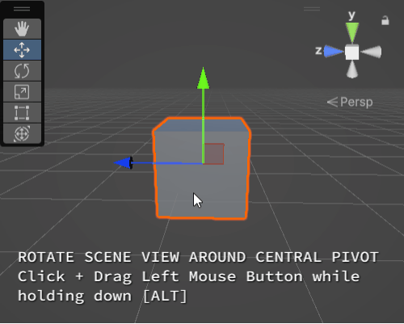
Zoom scene view
Option 1: Mouse Scroll Wheel Up / Down
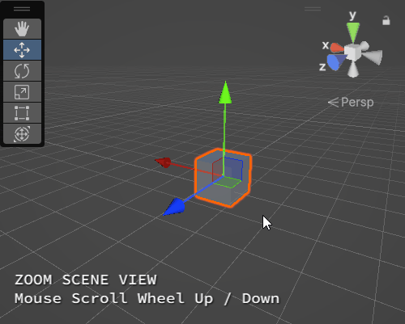
Option 2: Click + Drag Left Mouse Button while holding down [ALT].
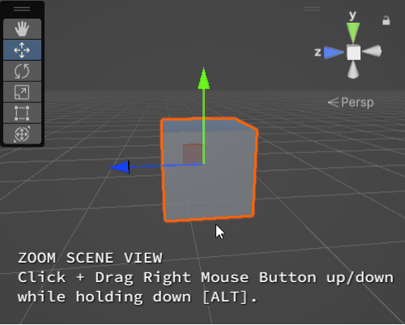
Flythrough Mode
Hold down Right Mouse Button.
Fly around scene using WASD and [Q][E].
Hold down [SHIFT] to move faster.
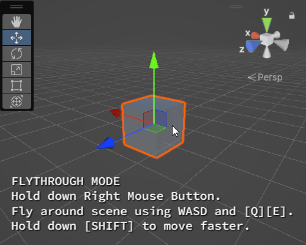
Focus scene view on selected object
Select object > Press [F]
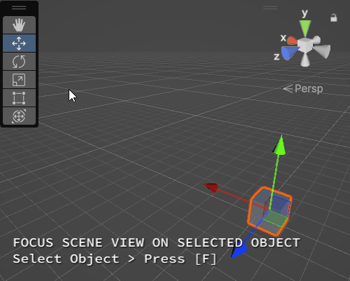
Toggle Perspective / Isometric View
Click the Gizmo box.
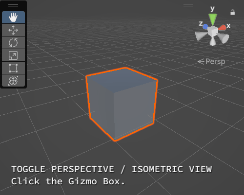
Snap to World Axis View
Click the Gizmo axes.
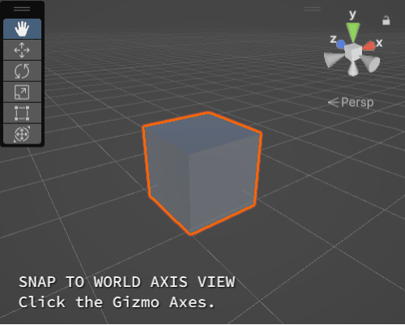
Unity C#
Unity uses C#, a type of object-oriented language, as one of its primary scripting languages.
We typically write Unity C# scripts to make customised blueprints for accessing, organising, and implementing data inside our game project. This is helpful for:
- storing information such as variables and functions inside an object or class;
- programming interactive / dynamic behaviour in objects;
How to write a Unity C# script
If you are new to coding in C#, watch this video for a brief introduction to C# Variables and Functions in Unity.
A script typically contains the following elements:
- Variable: a labelled container for data of a specific type.
- Functions: lines of code that contain a set of instructions (i.e. lines of code) and determine the frequency and order at which they should be executed. Functions may take INPUT variables (arguments), perform operations , and/or return OUTPUT variables (result).
When writing any sort of code, here's the general thought process:
OUTPUT
"I need my script to do THIS..."
⬇
INPUT
"... so I need to access THESE VARIABLES..."
⬇
METHOD
"... and need THESE FUNCTIONS to be called in this order sequence."
In this class, you'll learn to identify which information you'll need for each of your scripts, and where + how to retrieve/modify this data. However, there is no expectation to memorise every single programming term or method you come across.
The longer you work in Unity, the more accustomed you'll become with its interface and workflow, and eventually you'll find yourself not needing to look up information as often as you used to.
When in doubt, try searching for solutions on Unity's Documentation page or other community forums / blogs like Stack Exchange or gamedevbeginner.
To create a script Right click in the Project Panel > Create > Monobehaviour or C# script > Let's name this script "DemoScript".
It's a good idea to create a "Scripts" folder to store all the scripts in your project.
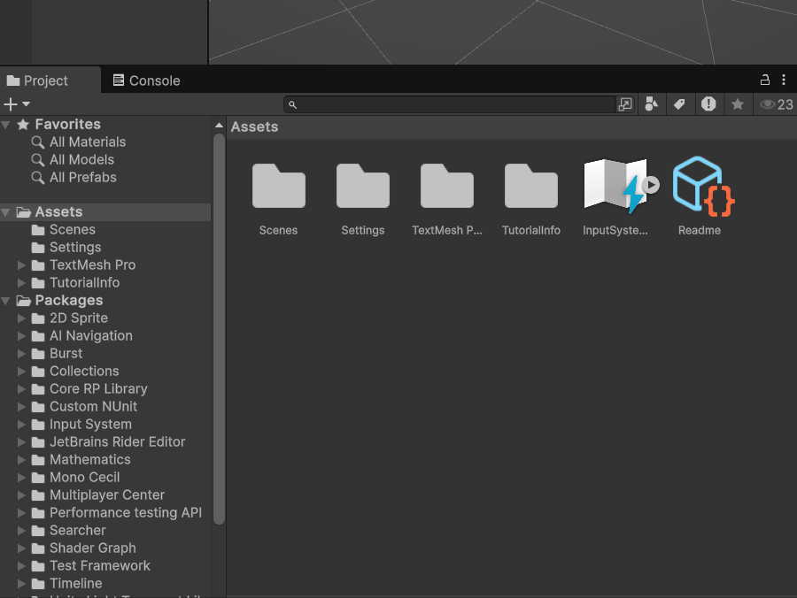
When naming your script, remember to follow these rules:
- the name must be unique -- no two MonoBehaviours should have the same name.
- use pascal case, (i.e. first alphabetical letter is capitalised, and every new word is marked with a capitalised case, no spaces.) e.g. MyScript.cs
- the file name of the script and the name of the MonoBehaviour must be exactly the same (case-sensitive).
- e.g. if your C# file name is "ScoreManager.cs", then the line declaring your Monobehaviour class in that script file should look like this:
public class ScoreManager : MonoBehaviour {...}
- e.g. if your C# file name is "ScoreManager.cs", then the line declaring your Monobehaviour class in that script file should look like this:
Your script should look something like this:
using UnityEngine;
public class DemoScript : MonoBehaviour
{
// Start is called once before the first execution of Update after the MonoBehaviour is created
void Start()
{
}
// Update is called once per frame
void Update()
{
}
}
Anatomy of a Unity C# Script
Let's break down the script we just made.
Namespaces
using UnityEngine;
Namespaces are reference libraries containing all the methods and classes for a specific context.
A C# script typically begins with a list of namespaces. The name of each namespace is placed after using.
MonoBehaviours
public class DemoScript : Monobehaviour{...}
In Unity C#, we're mostly working with a class called MonoBehaviour, which tells our script to behave like a component so that it can be attached to any gameobject in our scene.
When we create a new C# script in Unity, we are creating custom classes that inherit from a MonoBehaviour class (default). This allows our script to adopt the functionality and methods of a Monobehaviour class. You may think of this in terms of a hierarchal model of classification: our "DemoScript" class exists as a sub-category of MonoBehaviours.
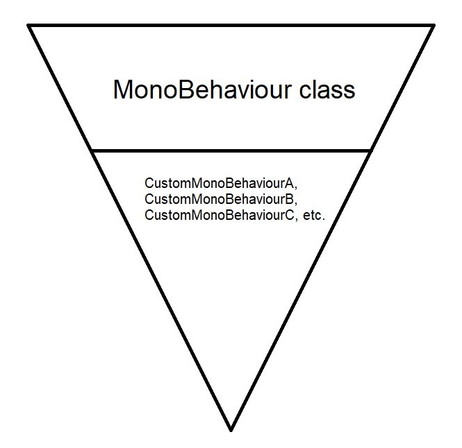
Followed by the MonoBehaviour declaration are a pair of curly braces { }. When writing new properties and methods for this class, we typically want to write within these curly braces.
Variables
Variables are labelled data containers that represent properties for that class. These variables can be assigned values, and whose read/write access can be set by declaring them as public or private.
Most properties in a component are likely accessible via scripting by calling their labels (Unity scripting reference is your best dictionary!)
When creating variables:
- Declare access permissions in lowercase, either
publicorprivate.- public variables can be accessed and used by other classes outside of the current class' scope.
- private variables cannot be accessed nor used by other classes.
- if not specified, the variable defaults to
privateaccess.
- Declare what type of variable it is
float- a numerical value that can be in decimalsint- a numerical integer (whole numbers only)bool- binary property that can be either assigned 'true' or 'false'string- a sequence of characters- other public classes including
GameObjectand components (e.g.Transform)
- Name the variable
- no spaces allowed.
- use camel case.
int numberOfCamels; - use clear and descriptive nouns -- the intent of this variable should be immediately apparent from its name
- e.g. if it is a bool, prefix with a verb (typically phrase as a question.)
bool isWalking; bool hasSpecialAbility;
- e.g. if it is a bool, prefix with a verb (typically phrase as a question.)
- use prefixes with an underscore to differentiate private member variables from public ones.
private bool _currentHealth; public bool currentHealth;
- Assign a value that fits the declared variable type.
public float speed = 0.4f; public int pointsToWin = 10; public bool hasWon = false; public string winText = "You won!";
Functions
By default, a newly created MonoBehaviour script should alread contain two event functions (i.e. functions that are automatically triggered during specific events), along with commented lines on what they do:
public class DemoScript : MonoBehaviour
{
// Start is called once before the first execution of Update after the MonoBehaviour is created
void Start()
{
//anything inside here will run only once at the start of the game, or when the script is set to active.
}
// Update is called once per frame
void Update()
{
//anything inside here will run once every frame update in project runtime.
}
}
Functions may accept arguments (input parameters) inside the parentheses. Multiple arguments are separated by commas.
float result;
void MultiplyNumbers(float a, float b){
result = a*b;
}
When creating functions:
- declare access permissions in lowercase (default:
private) - what type of value it returns in lowercase (if any)
//function returns a float public float MultiplyNumbersFloat(float a, float b){ return a*b; //this method can be called elsewhere //in the following manner: //float result = MultiplyNumbersFloat(float1, float2); } //function returns null value public void MultiplyNumbers(float a, float b){ float result = a*b; Debug.Log(result); //logs result to console. } - name of the function in pascal case, followed by parenthesis containing any argument variables.
float MultiplyByTwo(float initialFloat){...}
Key principles of Programming in Unity C#
- Single Responsibility -- Every module of code (class, function, etc.) should have a one and only purpose in the software functionality. This will be very helpful for:
- debugging scripts
- making your scripts easily reusable for other projects.
- Keep everything private unless it absolutely needs to be public.
- this is to avoid any conflicts, confusion, and unintended overwriting of information in other classes.
- if a variable just needs to be visible / editable in the Inspector but does not need to be publicly accessible to other classes, you should keep it private then add [SerializeField] before it.
[SerializeField] bool _currentIndex;
- Anticipate errors, and help your script help you catch them
- use
Debug.Log()orprint()as checkpoints to ensure your properties and methods are correct. - use
Debug.LogError()to trigger error messages during incorrect values / null references.
- use
int score = 0;
Debug.Log("score: "+score); //prints "score: 0" to the console
score++; //adds 1 to score.
Debug.Log("score: "+score); //prints "score: 1" to the console
score--; //subtracts 1 from score.
Debug.Log("score: "+score); //prints "score: 0" to the console
int totalScore;
if (totalScore == null){
Debug.LogError("totalScore has not been initialised!");
}
- Use comments to contextualise your lines of code.
//Unity will ignore everything inside this line //player's total score float score = 0;/* you can also comment across multiple lines */- Toggle Comment Hotkey Command
Visual Studio Community: CTRL/Cmd + [K], then CTRL/Cmd + [C]
Visual Studio Code: CTRL/Cmd + [/]
- Toggle Comment Hotkey Command
In-class exercise
Write a C# script to store, set, and update character information.
using UnityEngine;
//MonoBehvaiour class name "GooseInfo" is the same as our file name "GooseInfo.cs".
public class GooseInfo : MonoBehaviour
{
//basic variable types (string, int, float, bool)
//are all in small-case letters.
public string gooseName = "danny"; //a string of characters, aka text.
public int numberOfTeeth = 3; //integers; whole numbers, no decimals.
public float age = 10f; //floats; numbers with decimal ranges.
public bool isHappy = true; //boolean; can only be true or false.
//Unity-specific variable types like "Color" and "Material"
//need to start with a capitalised letter.
Color furColor = Color.blue;
[SerializeField] Material baseMat;
//[SerializeField] allows us to initialise
//this variable via drag-and-dropping
//a material asset into the inspector.
//Start() runs exactly once
//at the start of run time,
//or when the script is set to active.
private void Start()
{
//get the MeshRenderer component from the same gameobject
//that this script is attached to.
MeshRenderer renderer = GetComponent<MeshRenderer>();
//set this mesh renderer's material as baseMat.
renderer.material = baseMat;
//set the colour of the material in the mesh renderer as furColor.
renderer.material.color = furColor;
}
//Update() runs once every frame update
//as long as this script is active in the scene.
private void Update()
{
//increase age by 0.01f each time
//using our custom function
AddAge(0.01f);
//OR
//age = NewAge(0.01f);
//shorthand for increasing age by 1
//age++; //same as age+=1;
}
//increases age by a float called "amount"
private void AddAge(float amount)
{
age += amount;
}
//returns a float equal to "age + amount"
private float NewAge(float amount)
{
float result = age+amount;
return result;
}
}
Exercise before next class
Can you write a script that forces a GameObject to start at a specific position in the scene?
(Hint: A GameObject's position is stored in the Transform component; and positional values are stored as Vector3 data types.)